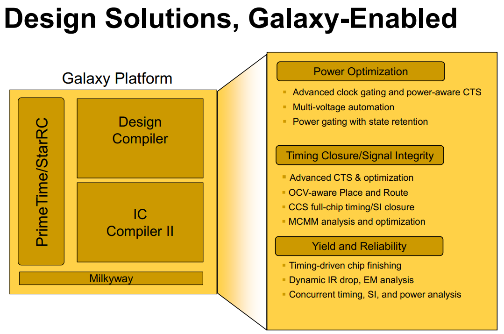
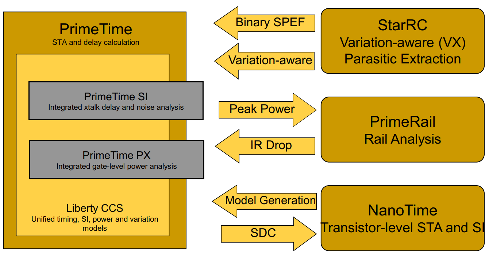

Galaxy Design Platform¶
The Galaxy Design Platform is a comprehensive solution for cellbased and custom IC implementation.
Galaxy accepts design intent in industry standard formats and generates a production ready IC design in GDSII format.
Galaxy RTL and Physical implementation products concurrently balance design constraints by performing intelligent tradeoffs between speed, area, power, test and yield.
Galaxy Sign-off engines accurately model complex physical interactions to ensure signal and power integrity.
Coherent algorithms for parasitic extraction and timing produce correlated results.

Galaxy Sign-Off¶
